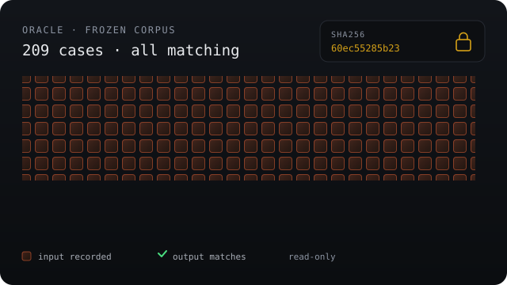
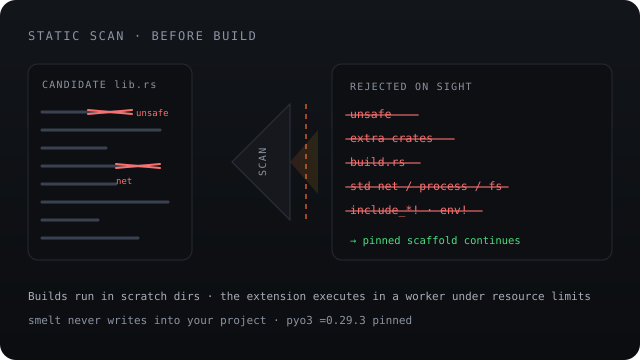
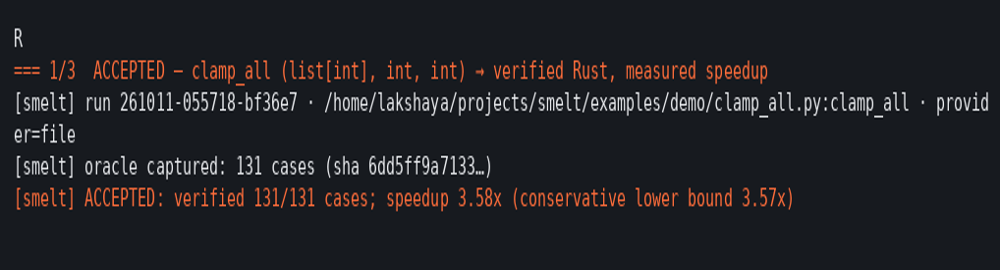

v0.6.0 — core loop · CLI · evals · Furnace TUI
Smelt slow Python
into Rust.
Only proven metal
ships.
smelt freezes what your function actually does into a differential oracle — 200+ recorded cases, hashed and read-only. A model writes the Rust. Code, not the model, checks every answer. Anything that fails, or shows no real gain, is rejected. The Python stays on as the fallback.
uv tool install smelt-rs
PyPI release pending — install from source today
Built and verified on
The model writes. Code decides.
Acceptance, refusal, retries, verification and benchmarking are all deterministic code. The model fills in one function body inside a pinned scaffold — nothing else. That is the whole design: no wrong rewrite is accepted on the tested inputs.
How it worksOne function, one loop
A real run, replayed
This is a recorded run against the frozen oracle — not a mock-up. The model wrote the Rust once, the build passed, 225/225 cases matched, and the benchmark measured a 4.14x speedup with a conservative lower bound of 4.00x.
- Deterministic orchestrator — resume any run from its checkpoint
- Every number labeled with the model that produced it
- Nothing rounded up; failures stay in the tables

The oracle
Freeze the behaviour first
Before any model runs, smelt calls your function on 200+ generated inputs and records every answer — values, exceptions, the lot. The corpus is hashed and read-only, so it cannot be tuned to fit a candidate.
- str / int / float / bool / list[int] / list[str], single or multi-parameter
- Panics are recorded as Python exceptions, so error paths are tested too
- The claim is exactly "equivalent on the tested inputs" — no more

Generated code is untrusted
A pinned scaffold, a hard scan
The model never writes Cargo.toml, never touches the build, and never
chooses a crate. It fills one function body. Before anything compiles, a static scan
rejects the dangerous surface outright.
- Rejected on sight:
unsafe, extra crates,build.rs, std net/process/fs,include_*!,env! - Builds happen in run-scratch dirs; smelt never writes into your project
- The extension runs in a separate worker process under resource limits

Furnace · Go TUI
Watch the metal, not a spinner
Furnace replays finished runs and drives new ones live. It reads the run's event stream and heats the loop as each step lands — the Python core stays the source of truth, and Furnace never executes generated code.
- Replay, live run, scan picker, history, view-only diff
- 26 Go tests, run locally and in CI
- Launch with
smelt furnacewhen the binary is installed
Why it holds up
Honest by construction.
Deterministic core
Every transition is checkpointed to state.json and events.jsonl. Interrupt a run, and smelt resume re-validates the hashes and continues.
Rejections are results
Four of twenty-four corpus tasks were rejected at 1.22–1.46x rather than reported as wins. Small functions legitimately fail to beat PyO3 call overhead.
Wrong rewrites get caught
A false-accept gate: 13/13 deliberately wrong rewrites rejected (plus a 16/16 tuple battery) — wrong values, wrong exceptions, and panics all fail the oracle.
Runs offline too
Capture, verify and bench never need the network. A fully local arm runs on gemma-4-e2b-qat via llama.cpp — 18 accepted, 6 rejected, 0 errors.
gemma-4-26b-a4b-it · 36 provider calls (cap 120) · ran on a laptop · generated from evals/results.json
Three outcomes
All of them honest.
Accepted
Verified on every recorded case, and the measured speedup clears the conservative 1.5x lower bound. Real metal — and the number comes with its confidence interval attached.
Rejected
No correct rewrite within the attempt budget, or no meaningful gain. A correct, honest outcome — not an error. The fallen-away material stays in the table.
Refused
The target is impure — I/O, randomness, time, globals — or an unsupported shape. The message names the reason and a refactor hint. Nothing burns silently.